Zuvo · Publicité « Et si ce que tu n'utilises plus… »Storyboard v1 — proposition à valider — aucune vidéo rendue1
Zuvo
Publicité cinématographique · storyboard
Et si ce que tu n'utilises plus pouvait te rapporter de l'argent ?
90 s durée totale
9:16 format principal · adaptation 16:9
6 scènes · 28 plans
FR français parlé au Cameroun
Proposition à valider avant production. Aucune vidéo n'a été rendue. Les écrans sont de
vraies captures de l'application (environnement de démonstration local, données fictives,
prix floutés en attente de validation). Les cadres « tournage » sont des schémas de
cadrage, pas des images finales.
Zuvo · Publicité « Et si ce que tu n'utilises plus… »Storyboard v1 — proposition à valider — aucune vidéo rendue2
L'histoire en une phrase
Junior, jeune actif de Yaoundé, étouffe sous les affaires qu'il n'utilise plus ; son ami
Boris lui fait découvrir Zuvo ; il publie ses baskets en quelques étapes, reçoit ses
premiers messages… et sa chambre respire. Ce que tu n'utilises plus peut encore servir à
quelqu'un d'autre.
1La chambre et les affaires oubliées0:00–0:17
2La découverte de Zuvo0:17–0:31
3Présentation réelle du site0:31–0:51
4Les premiers contacts0:51–1:05
5L'esprit de la communauté camerounaise1:05–1:17
6Conclusion et appel à l'action1:17–1:30
Voix
Musique
dialogues voix off — courbe : intensité musicale
(montées à la publication et aux premiers messages)
Personnages
Junior (protagoniste, 22–26 ans) — étudiant ou jeune actif à Yaoundé, t-shirt
blanc, attachant, un peu débordé. Nom proposé, à valider.
Boris (l'ami, même âge) — casquette, chemise en pagne aux tons bleus (écho
discret à la marque), blagueur, toujours en train de grignoter.
Scène 5 — une étudiante, un jeune actif, une femme d'une quarantaine d'années, un
jeune acheteur : apparences, styles et lieux variés.
Ce qui change par rapport au brief
Minutage recalé sur la durée réelle des répliques (≈ 3 mots/s) : 90 s au total, scène 1
de 17 s au lieu de 12.
Notifications : badge réel sur « Messages » (le site n'affiche pas de bulle dans
l'application ; la notification push dépend de l'appareil).
Second acheteur : intéressé par l'ancien téléphone, publié par Junior au plan 4A (« Mes
annonces »).
Principes
Écrans réels uniquement, lisibles au moins 2 s pour les étapes clés. Aucun chiffre, prix
ou promesse sans validation.
Mention permanente pendant la démo et les messages : « Scénario fictif. Annonces, prix
et messages de démonstration. »
Sous-titres incrustés sur tout le film (lecture sans le son).
Zuvo · Publicité « Et si ce que tu n'utilises plus… »Storyboard v1 — proposition à valider — aucune vidéo rendue3
Direction artistique
Couleurs réelles du site (src/app/globals.css)
Le brief cite « vert sauge et blanc cassé, à adapter aux couleurs réelles » : le site
est aujourd'hui en bleu et blanc cassé. La publicité suit le site.
Bleu Zuvo#1f5fe0couleur principale du site, boutons, logo
Bleu foncé#1a4dbbsurvol, contrastes
Blanc cassé#f7f9fcfond du site et de la carte finale
Bleu nuit#0f1b2dtextes
Bleu clair#bfd5fdpastille du logo
Bleu très clair#eff5fffonds d'accent
Typographie
Plus Jakarta Sans — la police du site. Titres en
gras (640–720), textes en 560.
Image
Lumière naturelle, étalonnage chaud et doux pour les scènes réelles ; l'interface bleue
ressort sur ces tons chauds. Costumes et décors sobres, quelques touches de bleu. Pas de
logos de marques visibles sur les objets ni dans les titres d'annonces.
Motion design
Logo : le carré bleu apparaît, le Z se trace, la pastille bleu clair « s'allume » (la
seconde vie). Étiquettes de catégories (plan 1C) et textes d'étapes au style des puces
du site. Transitions par raccord dans l'écran du téléphone, jamais agressives.
Zones de sécurité 9:16 (TikTok, Reels, Statut WhatsApp)
zone utile
Rien d'important dans les 220 px du haut, les 380 px du bas et les 140 px de droite
(boutons et légendes des plateformes). Sous-titres au-dessus de la zone basse.
Musique
Afro-fusion / amapiano instrumental (≈ 110 BPM), sous licence couvrant la publicité
payante. Intro légère (0–17 s), entrée du groove (17 s), montée et impact au moment de «
Publier l'annonce » (45,5 s), seconde montée sur les premiers messages, pleine énergie
en scène 5, résolution sur la carte finale.
Zuvo · Publicité « Et si ce que tu n'utilises plus… »Storyboard v1 — proposition à valider — aucune vidéo rendue4
Scène 1
La chambre et les affaires oubliées
0:00 – 0:17 · 17 s (brief : 0–12 s)
Lieu Chambre d'un jeune actif à Yaoundé (mini-cité) : lit, armoire, chaise,
table, ventilateur sur pied, rideaux en tissu imprimé. Lumière Fin
d'après-midi, soleil rasant à travers les rideaux, poussière en suspension.
Étalonnage chaud et naturel. Intention Accrocher en 3 secondes avec une situation
que tout le monde connaît, et une pointe d'humour.
Plan moyen (POV)
1A0:00 – 0:033 s
L'armoire s'ouvre
Tournage
Image
Vue depuis l'intérieur de l'armoire : les portes s'ouvrent sur
Junior (t-shirt blanc), qui découvre une pile de vêtements qu'il ne porte
plus. Une chemise glisse de la pile et lui tombe sur l'épaule.
Caméra
Caméra fixe dans l'armoire, grand angle (24 mm), légère contre-plongée.
À l'écran
Option : titre-question en surimpression, mot à mot (0:00,5–0:03) : « Et si ce que
tu n'utilises plus pouvait te rapporter de l'argent ? »
Son
Grincement des portes, ambiance du quartier (moto-taxis au loin, radio du voisin).
Musique : intro légère (shaker, guitare).
16:9
Même plan : les portes ouvertes cadrent Junior au centre, le décor de la chambre
apparaît en arrière-plan.
Plan large
1B0:03 – 0:07,54.5 s
« Même ma chambre est devenue un magasin »
Tournage
Image
Junior se retourne vers la chambre : sur la chaise, des baskets, un sac, un casque
audio et quelques accessoires ; sur la table, un ancien téléphone. Le ventilateur
tourne, les rideaux bougent.
Caméra
Plan fixe puis léger travelling avant.
Junior
« Même ma chambre est devenue un magasin maintenant… Tout ça, je n'utilise
même plus ! »
À l'écran
Sous-titres incrustés (tout le film).
Son
Ambiance de la chambre, ventilateur.
16:9
Le 16:9 montre toute la chambre : chaise à gauche, Junior à droite, fenêtre au
fond.
Inserts au ralenti
1C0:07,5 – 0:12,55 s
Les objets mis en valeur
Tournage
Image
Inserts successifs : baskets, sac, casque audio, ancien téléphone. Chaque objet
reçoit une petite étiquette au style de Zuvo portant sa vraie catégorie du site :
« Chaussures », « Sacs & accessoires », « TV, audio & photo », «
Téléphones & tablettes ».
Caméra
Slider latéral lent, mise au point qui glisse d'un objet à l'autre,
tournage à 60–120 i/s (ralenti).
Voix off
« On a tous des affaires qu'on n'utilise plus. Des vêtements, des
chaussures, des téléphones, des accessoires… »
À l'écran
Étiquettes de catégories (icône + nom réels du site), sans prix.
Son
Chaque coupe tombe sur un temps de la musique.
16:9
Les quatre objets peuvent apparaître côte à côte en écran partagé (4 colonnes).
Plan rapproché
1D0:12,5 – 0:174.5 s
« Ce qui dort chez toi… »
Tournage
Image
Junior s'assoit sur le bord du lit et regarde la chaise chargée, pensif ; la
lumière dorée glisse sur son visage.
Caméra
Travelling avant très lent.
Voix off
« Pourtant, ce qui dort chez toi peut encore faire le bonheur de quelqu'un
d'autre. »
Son
À la fin du plan : on frappe à la porte.
16:9
Junior sur le tiers droit, la chaise floue au premier plan à gauche.
Zuvo · Publicité « Et si ce que tu n'utilises plus… »Storyboard v1 — proposition à valider — aucune vidéo rendue5
Scène 2
La découverte de Zuvo
0:17 – 0:31 · 14 s (brief : 12–23 s)
Lieu Même chambre. Lumière Même lumière, caméra épaule plus vivante.
Intention L'ami apporte la solution ; on présente Zuvo par la parole avant de
le montrer.
Plan moyen
2A0:17 – 0:192 s
Boris entre
Tournage
Image
La porte s'ouvre : Boris (casquette, chemise en pagne aux tons bleus) passe
la tête, puis entre et s'arrête net devant la chaise.
Caméra
Caméra épaule, depuis l'intérieur de la chambre.
Boris
« Ko ko ko ! »
Son
Porte, pas.
16:9
Porte à gauche du cadre, Junior assis à droite.
Plan rapproché
2B0:19 – 0:212 s
« Jusqu'à quand ? »
Tournage
Image
Boris soulève une basket du bout des doigts, sourire moqueur.
Caméra
Caméra épaule, léger recadrage sur la basket.
Boris
« Tu comptes garder tout ça jusqu'à quand ? »
16:9
Identique, plus d'air autour de Boris.
Plan rapproché (contrechamp)
2C0:21 – 0:23,52.5 s
« Je ne sais même plus quoi en faire ! »
Tournage
Image
Junior ouvre les bras, mi-dépité, mi-amusé.
Caméra
Contrechamp, caméra épaule.
Junior
« Je ne sais même plus quoi en faire ! »
16:9
Identique.
Plan à deux + insert écran
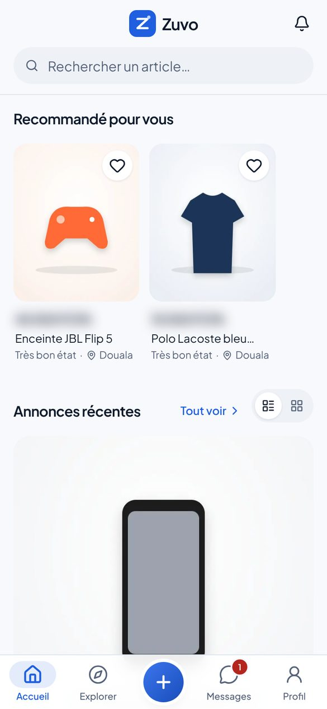
2D0:23,5 – 0:295.5 s
« Mon frère, tu connais Zuvo ? »
Tournage + interface
Image
Boris s'assoit à côté de Junior, sort son téléphone et lui montre le site.
Junior se rapproche de l'écran, intrigué. Insert par-dessus l'épaule :
page d'accueil réelle de Zuvo.
Caméra
Plan à deux en caméra épaule, puis insert par-dessus l'épaule sur
l'écran (interface incrustée en post-production).
Boris
« Mon frère, tu connais Zuvo ? Tu peux publier tes articles et trouver des gens
qui veulent les acheter. »
À l'écran
Écran du téléphone : page d'accueil réelle.
Son
Petite pause musicale sur « tu connais Zuvo ? ».
Écrans
Accueil
16:9
Plan à deux en entier, l'écran du téléphone lisible au centre.
Zuvo · Publicité « Et si ce que tu n'utilises plus… »Storyboard v1 — proposition à valider — aucune vidéo rendue6
Scène 2
La découverte de Zuvo (suite)
0:17 – 0:31 · 14 s (brief : 12–23 s)
Transition motion design
2E0:29 – 0:312 s
Le logo Zuvo
Motion design
Image
Travelling avant dans l'écran du téléphone ; le cadre devient blanc cassé et
le logo Zuvo se construit : carré bleu, tracé du Z, pastille bleu clair.
Caméra
Zoom raccord (de la caméra vers l'écran), puis animation 2D.
Voix off
« Voici Zuvo, la marketplace pensée pour le Cameroun. »
À l'écran
Logo Zuvo animé.
Son
Souffle + impact musical sur l'apparition du logo.
16:9
Logo centré, même animation.
Scène 3
Présentation réelle du site
0:31 – 0:51 · 20 s (brief : 23–43 s)
Lieu Interface réelle (enregistrements d'écran) et chambre, près de la
fenêtre. Lumière Lumière naturelle de fenêtre pour la photo de l'article.
Intention Montrer le vrai site, lisible, et les vraies étapes de publication, sans
accélérer au point de les rendre incompréhensibles.
Scénario fictif. Annonces, prix et messages de démonstration.Interface réelle
3A0:31 – 0:343 s
Accueil et annonces
Interface réelle
Image
Junior a maintenant le téléphone en main. Page d'accueil réelle : logo, «
Rechercher un article… », « Recommandé pour vous », « Annonces récentes » ;
défilement doux, puis balayage des photos d'une annonce dans le fil.
Caméra
Enregistrement d'écran plein cadre, dans un téléphone qui flotte légèrement
(motion design).
Voix off
« Un endroit où tes affaires peuvent commencer une nouvelle vie. »
À l'écran
Scénario fictif. Annonces, prix et messages de démonstration. (bas d'écran,
de 0:31 à 1:05)
Son
Sons d'interface discrets (défilement, toucher).
Écrans
Accueil → Accueil — fil des annonces
16:9
Option : version ordinateur du site (barre latérale) pour ce plan.
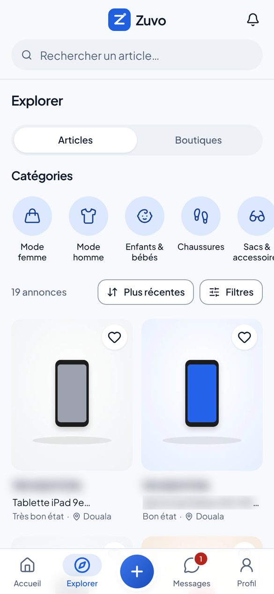
Scénario fictif. Annonces, prix et messages de démonstration.Interface réelle
3B0:34 – 0:36,52.5 s
Recherche et catégories
Interface réelle
Image
Explorer : onglets Articles / Boutiques, catégories réelles ; saisie de « baskets
» dans la recherche, résultats.
Caméra
Enregistrement d'écran ; zoom doux sur la grille des catégories.
Son
Frappe au clavier discrète.
Écrans
Explorer — catégories → Recherche « baskets »
16:9
Écran partagé : catégories à gauche, résultats à droite.
Zuvo · Publicité « Et si ce que tu n'utilises plus… »Storyboard v1 — proposition à valider — aucune vidéo rendue7
Scène 3
Présentation réelle du site (suite)
0:31 – 0:51 · 20 s (brief : 23–43 s)
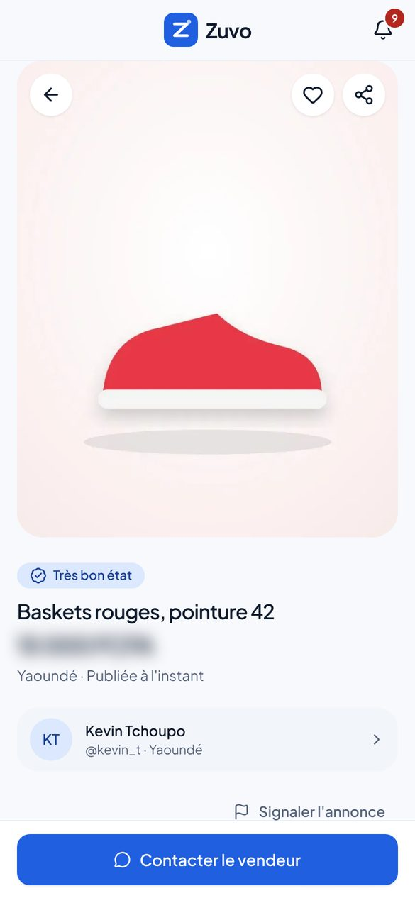
Scénario fictif. Annonces, prix et messages de démonstration.Interface réelle
3C0:36,5 – 0:392.5 s
Fiche produit
Interface réelle
Image
Fiche d'une annonce de démonstration : photo, « Très bon état », titre, prix,
ville, « Publiée… », vendeur, bouton « Contacter le vendeur ».
Caméra
Enregistrement d'écran ; léger zoom sur le prix et l'état.
À l'écran
Prix : montant à valider, sinon flouté (comme sur cette planche).
Écrans
Annonce (acheteur)
16:9
Téléphone à droite, infos clés reprises en texte à gauche.
1. Prends tes photos
Scénario fictif. Annonces, prix et messages de démonstration.Plan rapproché
3D0:39 – 0:412 s
1. Prends tes photos
Tournage
Image
Junior pose ses baskets sur le rebord de la fenêtre, en pleine lumière, et les
photographie avec son téléphone.
Caméra
Plan rapproché par-dessus l'épaule, puis insert sur l'écran de
l'appareil photo.
Voix off
« Tu prends quelques photos, tu ajoutes le prix et les informations de ton
article, puis tu publies ton annonce. »
À l'écran
« 1. Prends tes photos »
Son
Déclencheur photo, léger flash blanc.
16:9
Junior à gauche, la fenêtre et les baskets à droite.
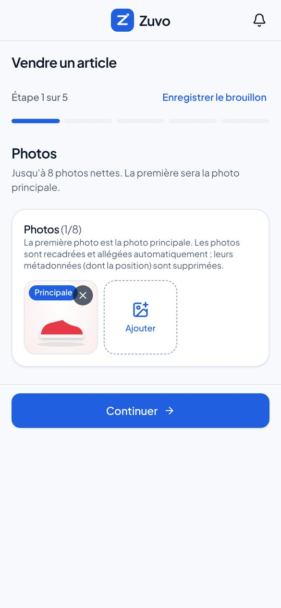
2. Publie ton annonce
Scénario fictif. Annonces, prix et messages de démonstration.Interface réelle (accéléré lisible)
3E0:41 – 0:45,54.5 s
2. Publie ton annonce
Interface réelle
Image
Parcours réel « Vendre un article », environ une seconde par étape : Photos (photo
« Principale ») → Description (titre) → Catégorie et état (« Chaussures », « Très
bon état ») → Prix et lieu (prix, « Yaoundé ») → Vérification. La barre « Étape x
sur 5 » progresse.
Caméra
Enregistrement d'écran ; transitions latérales identiques à celles du site.
À l'écran
« 2. Publie ton annonce »
À l'écran
Puces animées reprenant les vrais champs : Titre · Description · Catégorie · État
· Prix · Ville
Son
Un « clic » doux à chaque « Continuer ».
Écrans
Vendre — 1/5 Photos → Vendre — 2/5 Description → Vendre — 3/5 Catégorie → Vendre —
4/5 Prix et lieu → Vendre — 5/5 Vérification
16:9
Les cinq étapes en frise horizontale, l'étape active agrandie.
Scénario fictif. Annonces, prix et messages de démonstration.Insert macro + interface
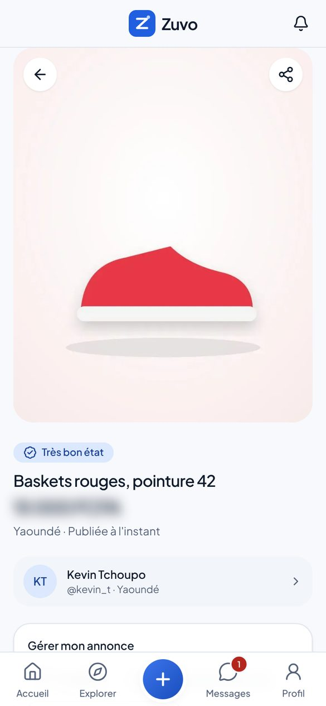
3F0:45,5 – 0:47,52 s
« Publier l'annonce »
Tournage + interface
Image
Gros plan du pouce qui touche « Publier l'annonce », puis la page de
l'annonce publiée : « Publiée à l'instant », panneau « Gérer mon annonce
».
Caméra
Macro (100 mm) sur le pouce, raccord sur l'enregistrement d'écran.
Voix off
« Les personnes intéressées peuvent découvrir ton article et te contacter. »
Son
Montée musicale puis impact sur le toucher (première montée demandée).
Zuvo · Publicité « Et si ce que tu n'utilises plus… »Storyboard v1 — proposition à valider — aucune vidéo rendue8
Scène 3
Présentation réelle du site (suite)
0:31 – 0:51 · 20 s (brief : 23–43 s)
3. Échange avec les acheteurs
Scénario fictif. Annonces, prix et messages de démonstration.Interface réelle
3G0:47,5 – 0:513.5 s
3. Échange avec les acheteurs
Interface réelle
Image
La même annonce vue par un acheteur, avec le bouton « Contacter le vendeur ».
Caméra
Enregistrement d'écran, léger zoom sur le bouton.
À l'écran
« 3. Échange avec les acheteurs »
Écrans
Annonce (acheteur)
16:9
Les trois étapes restent affichées à gauche, cochées.
Scène 4
Les premiers contacts
0:51 – 1:05 · 14 s (brief : 43–60 s)
Lieu Chambre ; téléphone posé sur le lit. Lumière Fin de journée, première
lampe allumée. Intention L'émotion : quelqu'un s'intéresse à ses
affaires. Messages présentés comme une scène reconstituée, sans résultat chiffré.
Scénario fictif. Annonces, prix et messages de démonstration.Montage elliptique
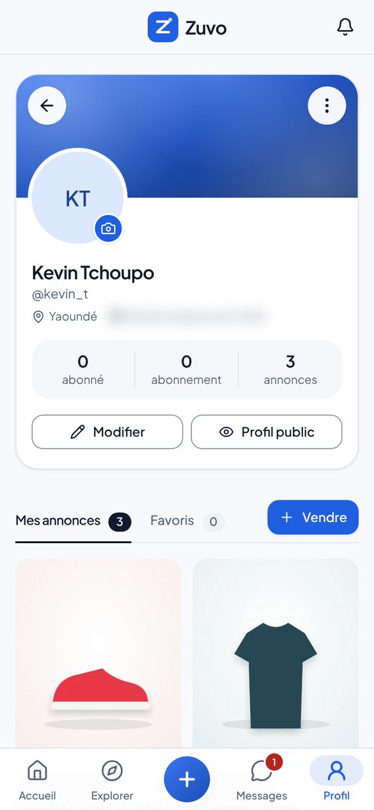
4A0:51 – 0:53,52.5 s
Il reprend ses activités
Tournage + interface
Image
Coupes rapides : Junior photographie aussi l'ancien téléphone et une chemise
; son profil affiche « Mes annonces ». Il pose le téléphone sur le lit et commence
à ranger ; Boris grignote des arachides.
Caméra
Jump cuts sur le même axe, plan fixe large.
À l'écran
Écran : profil réel, onglet « Mes annonces ».
Son
Musique en groove régulier.
Écrans
Profil — Mes annonces
16:9
Identique.
Scénario fictif. Annonces, prix et messages de démonstration.Gros plan + interface
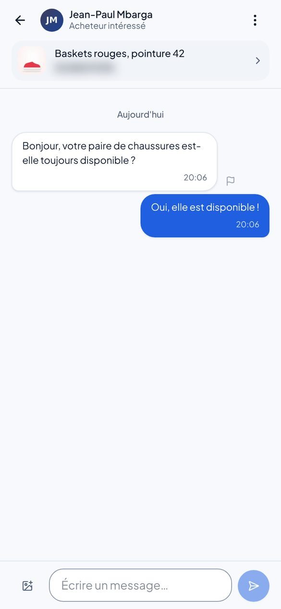
4B0:53,5 – 0:56,53 s
Le premier message
Tournage + interface
Image
Le téléphone vibre sur le lit. Gros plan : badge rouge sur « Messages ». Junior
ouvre la conversation (message lisible au moins 2 secondes).
Caméra
Gros plan du téléphone, puis enregistrement d'écran.
À l'écran
Message (scène reconstituée) : « Bonjour, votre paire de chaussures est-elle
toujours disponible ? »
Son
Vibration, petite note musicale. Pas de bannière push par défaut (voir points à
valider).
Écrans
Conversation
16:9
Téléphone et visage de Junior dans le même cadre.
Zuvo · Publicité « Et si ce que tu n'utilises plus… »Storyboard v1 — proposition à valider — aucune vidéo rendue9
Scène 4
Les premiers contacts (suite)
0:51 – 1:05 · 14 s (brief : 43–60 s)
Scénario fictif. Annonces, prix et messages de démonstration.Plan rapproché + interface
4C0:56,5 – 0:58,52 s
« Oui, elle est disponible ! »
Tournage + interface
Image
Junior sourit et répond ; la bulle bleue part dans la conversation.
Caméra
Plan rapproché, raccord sur l'écran.
Junior
« Oui, elle est disponible ! »
À l'écran
Réponse affichée dans la conversation.
Son
Son d'envoi discret.
Écrans
Conversation
16:9
Écran partagé : visage / conversation.
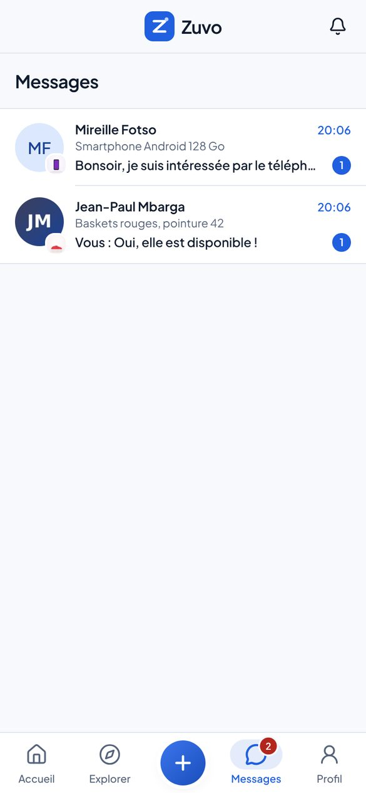
Scénario fictif. Annonces, prix et messages de démonstration.Interface réelle
4D0:58,5 – 1:00,52 s
Un second acheteur
Interface réelle
Image
Nouvelle vibration : une deuxième conversation apparaît dans « Messages », pour
l'ancien téléphone.
Caméra
Enregistrement d'écran de la boîte de réception.
À l'écran
Message (scène reconstituée) : « Bonsoir, je suis intéressée par le téléphone. »
Son
Vibration, deuxième note (la musique monte).
Écrans
Messages
16:9
Identique.
Scénario fictif. Annonces, prix et messages de démonstration.Plan à deux
4E1:00,5 – 1:054.5 s
« Je t'avais dit, mon frère ! »
Tournage
Image
Junior se tourne vers Boris, surpris et amusé. Boris, la bouche pleine, sourit.
Caméra
Plan à deux fixe, réactions naturelles (laisser jouer).
Junior
« Héé, donc mes vieilles affaires avaient encore de la valeur ?! »
Boris
« Je t'avais dit, mon frère ! »
Son
Montée musicale vers la scène 5.
16:9
Identique, la chambre visible autour d'eux.
Zuvo · Publicité « Et si ce que tu n'utilises plus… »Storyboard v1 — proposition à valider — aucune vidéo rendue10
Scène 5
L'esprit de la communauté camerounaise
1:05 – 1:17 · 12 s (brief : 60–72 s)
Lieu Quatre lieux de vie variés (chambre d'étudiante, pause déjeuner sous un
auvent, salon, trajet en taxi). Lumière Jour, lumières naturelles différentes selon
les lieux. Intention Élargir : Zuvo s'adresse à des profils variés. Aucun
compteur, aucun nom de ville à l'écran (le site est en bêta).
Plan rapproché
5A1:05 – 1:083 s
L'étudiante
Tournage + interface
Image
Une étudiante (chambre de cité universitaire, style décontracté) photographie un
sac à main posé sur son lit ; insert sur l'étape « Photos ».
Caméra
Plan rapproché, caméra épaule.
Voix off
« Que tu sois étudiant, jeune actif ou simplement quelqu'un qui veut faire de
la place chez lui, Zuvo te permet de donner une seconde vie à tes affaires et de
découvrir de bonnes occasions. »
Son
Montage sur les temps, musique pleine.
Écrans
Vendre — 1/5 Photos
16:9
Personnage à gauche, écran à droite.
Plan moyen
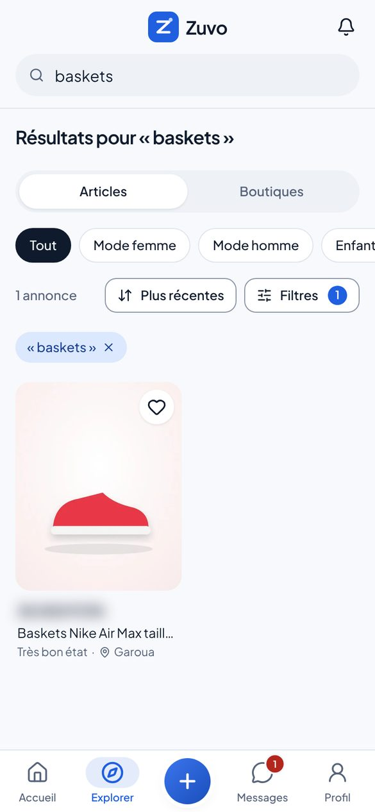
5B1:08 – 1:113 s
Le jeune actif
Tournage + interface
Image
Un jeune actif (chemise, pause déjeuner sous un auvent) consulte des chaussures
sur son téléphone dans Explorer.
Caméra
Plan moyen, léger travelling latéral.
Écrans
Recherche « baskets »
16:9
Identique.
Plan rapproché
5C1:11 – 1:143 s
L'appareil électronique
Tournage
Image
Une femme d'une quarantaine d'années, dans son salon, photographie une
enceinte sur une table bien éclairée.
Caméra
Plan rapproché, mise au point sur l'enceinte.
16:9
Identique.
Plan rapproché
5D1:14 – 1:173 s
L'acheteur
Tournage + interface
Image
Un jeune homme, à l'arrière d'un taxi, découvre une annonce qui
l'intéresse et touche le cœur pour l'ajouter à ses favoris ; il sourit.
Caméra
Plan rapproché, lumière qui défile sur son visage.
Écrans
Annonce (acheteur)
16:9
Identique.
Zuvo · Publicité « Et si ce que tu n'utilises plus… »Storyboard v1 — proposition à valider — aucune vidéo rendue11
Scène 6
Conclusion et appel à l'action
1:17 – 1:30 · 13 s (brief : 72–90 s)
Lieu Chambre rangée, puis carte finale en motion design. Lumière Lumière
douce du soir, puis fond blanc cassé et bleu Zuvo. Intention Boucler
l'histoire (la chambre a changé) et laisser une marque claire : logo, signature,
adresse, appel à l'action.
Plan large
6A1:17 – 1:203 s
La chambre rangée
Tournage
Image
La chaise est libre, l'armoire en ordre, le ventilateur tourne. Junior,
allongé sur le lit, consulte Zuvo et sourit.
Caméra
Plan large fixe, même axe que le plan 1B (avant / après).
Voix off
« Alors, avant de laisser tes affaires prendre la poussière, pense à Zuvo. Publie,
découvre, échange… et donne une seconde vie à ce que tu n'utilises plus. »
Son
Musique allégée sous la voix.
16:9
Même axe que 1B : l'effet avant / après est encore plus lisible en 16:9.
Transition motion design
6B1:20 – 1:233 s
Le logo au centre
Motion design
Image
Junior tourne son téléphone vers la caméra, l'écran envahit le cadre ; le
logo Zuvo apparaît au centre avec l'animation de marque.
Caméra
Raccord écran, puis animation 2D.
À l'écran
Logo Zuvo.
Son
Impact doux + scintillement sur la pastille du logo.
16:9
Identique.
Zuvo
La seconde vie de tes affaires.
Le marché de la seconde main pensé pour le Cameroun.
[URL officielle à insérer]
Découvre Zuvo dès maintenant.
Carte finale
6C1:23 – 1:307 s
Appel à l'action
Motion design
Image
Carte finale sur blanc cassé : ZUVO, « La seconde vie de tes affaires. », « Le
marché de la seconde main pensé pour le Cameroun. », adresse du site, « Découvre
Zuvo dès maintenant. ».
Caméra
Animation 2D, textes qui entrent l'un après l'autre.
À l'écran
ZUVO
À l'écran
« La seconde vie de tes affaires. »
À l'écran
« Le marché de la seconde main pensé pour le Cameroun. »
À l'écran
[URL OFFICIELLE DE ZUVO À INSÉRER]
À l'écran
« Découvre Zuvo dès maintenant. »
Son
Accord final, la musique se résout ; dernière seconde silencieuse.
16:9
Mise en page horizontale (voir images de référence).
Zuvo · Publicité « Et si ce que tu n'utilises plus… »Storyboard v1 — proposition à valider — aucune vidéo rendue12
Bande voix (dialogues et voix off du brief, minutées)
Débit en mots par seconde : 2,5 à 3,4 pour la voix off, jusqu'à 3,9 pour les répliques
rapides entre amis. Si l'interprétation est plus lente, la scène 1 s'allonge au détriment
des plans muets de la scène 5.
Temps
Qui
Texte
mots/s
0:03 – 0:07,4
Junior
Même ma chambre est devenue un magasin maintenant… Tout ça, je n'utilise même
plus !
3.2
0:07,6 – 0:12,3
Voix off
On a tous des affaires qu'on n'utilise plus. Des vêtements, des chaussures,
des téléphones, des accessoires…
3.4
0:12,6 – 0:16,8
Voix off
Pourtant, ce qui dort chez toi peut encore faire le bonheur de quelqu'un
d'autre.
3.3
0:17,1 – 0:18
Boris
Ko ko ko !
3.3
0:19,1 – 0:21
Boris
Tu comptes garder tout ça jusqu'à quand ?
3.7
0:21,3 – 0:23,4
Junior
Je ne sais même plus quoi en faire !
3.8
0:23,7 – 0:28,9
Boris
Mon frère, tu connais Zuvo ? Tu peux publier tes articles et trouver des gens qui
veulent les acheter.
3.5
0:29,4 – 0:31,9
Voix off
Voici Zuvo, la marketplace pensée pour le Cameroun.
3.2
0:32,2 – 0:35,4
Voix off
Un endroit où tes affaires peuvent commencer une nouvelle vie.
3.1
0:39,2 – 0:45,6
Voix off
Tu prends quelques photos, tu ajoutes le prix et les informations de ton article, puis
tu publies ton annonce.
3.0
0:46,8 – 0:50,8
Voix off
Les personnes intéressées peuvent découvrir ton article et te contacter.
2.5
0:56,8 – 0:58,3
Junior
Oui, elle est disponible !
2.7
1:00,8 – 1:03,4
Junior
Héé, donc mes vieilles affaires avaient encore de la valeur ?!
3.8
1:03,6 – 1:04,9
Boris
Je t'avais dit, mon frère !
3.8
1:05,3 – 1:16,8
Voix off
Que tu sois étudiant, jeune actif ou simplement quelqu'un qui veut faire de la
place chez lui, Zuvo te permet de donner une seconde vie à tes affaires et de
découvrir de bonnes occasions.
3.0
1:17,3 – 1:27
Voix off
Alors, avant de laisser tes affaires prendre la poussière, pense à Zuvo. Publie,
découvre, échange… et donne une seconde vie à ce que tu n'utilises plus.
2.7
Zuvo · Publicité « Et si ce que tu n'utilises plus… »Storyboard v1 — proposition à valider — aucune vidéo rendue13
Images de référence (style frames)
Rendues avec la vraie police, le vrai logo et de vraies captures. Les fonds « tournage »
sont des aplats provisoires.
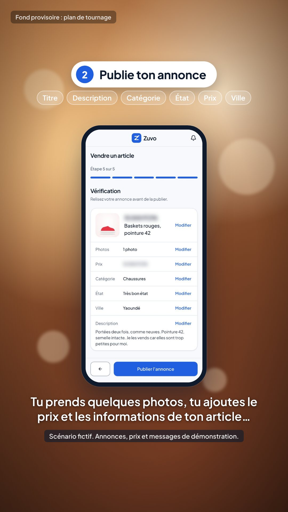
Démo 9:16 — plan 3E
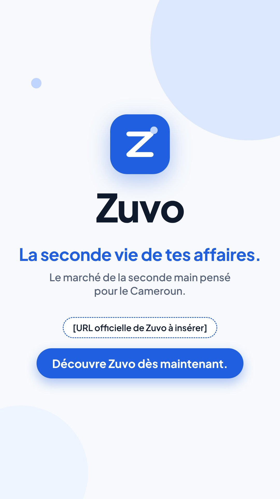
Carte finale 9:16 — plan 6C
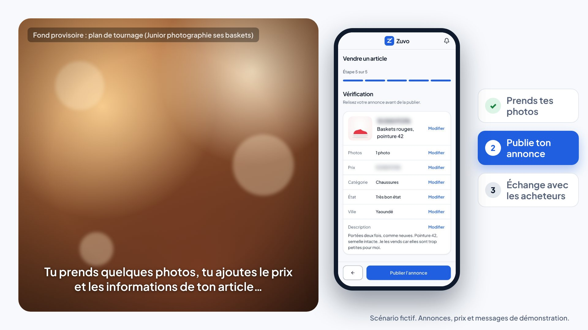
Démo 16:9 — écran partagé
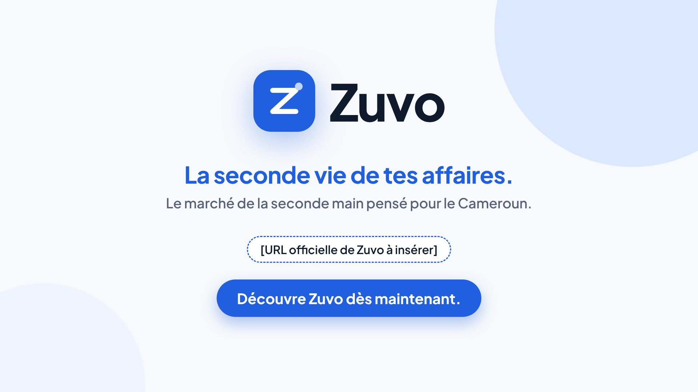
Carte finale 16:9
Zuvo · Publicité « Et si ce que tu n'utilises plus… »Storyboard v1 — proposition à valider — aucune vidéo rendue14
Points à valider avant production
Minutage — 90 s, scènes décalées par rapport au brief pour que dialogues et voix
off tiennent sans être précipités.
Adresse du site — l'adresse actuelle « zuvo-beta.vercel.app » est une adresse de
bêta : quelle URL officielle afficher sur la carte finale ?
Prix dans la démo — montants des annonces de démonstration à valider, ou prix
floutés (comme sur cette planche).
« Gratuit et sans commission » — affiché par le site à l'étape « Prix et lieu » et
dans « Pourquoi vendre sur Zuvo ? ». Promesse commerciale : la montrer, ou recadrer ces
écrans.
Notification push — bannière du téléphone uniquement si l'envoi a été testé sur
Android et iPhone ; sinon, badge réel sur « Messages » (proposé par défaut).
Second message — « Bonsoir, je suis intéressée par le téléphone. » (le brief ne
donne pas son texte).
Personnages — prénoms Junior et Boris ; le compte de démonstration affichera le nom
choisi.
Ouverture — titre-question en surimpression pendant les 3 premières secondes : oui
ou non.
Mode de production — voir ci-dessous.
A. Tournage réel recommandé
Deux comédiens camerounais + quatre profils en scène 5, un jour et demi de tournage, une
chambre réelle à Yaoundé et quatre lieux. Écrans incrustés en post-production à partir
des vrais enregistrements. Voix off enregistrée par un comédien ou une comédienne
camerounais(e). Musique sous licence ou composée sur commande.
B. Génération vidéo par IA
Prompts par plan et fiches personnages. Risques : visages et décors qui changent d'un
plan à l'autre, mains et téléphones déformés. Interfaces toujours incrustées depuis les
vraies captures, voix off humaine, mention « contenu généré par IA » selon les règles de
chaque plateforme.
C. Animatique (réalisable ici)
Version minutée avec les cadres de ce storyboard, les vrais enregistrements d'écran, le
motion design (logo, étapes, carte finale) en 9:16 et 16:9, sous-titres et musique
temporaire. Sert de prévisualisation et de base au monteur ; ce n'est pas le film final.
Après validation : script final, voix off minutée (et fichier de sous-titres), liste des
plans pour le tournage, enregistrements d'écran réels en haute définition, éléments de
motion design (logo, étapes, étiquettes, carte finale) en 9:16 et 16:9, prompts par plan,
plan de montage et animatique.